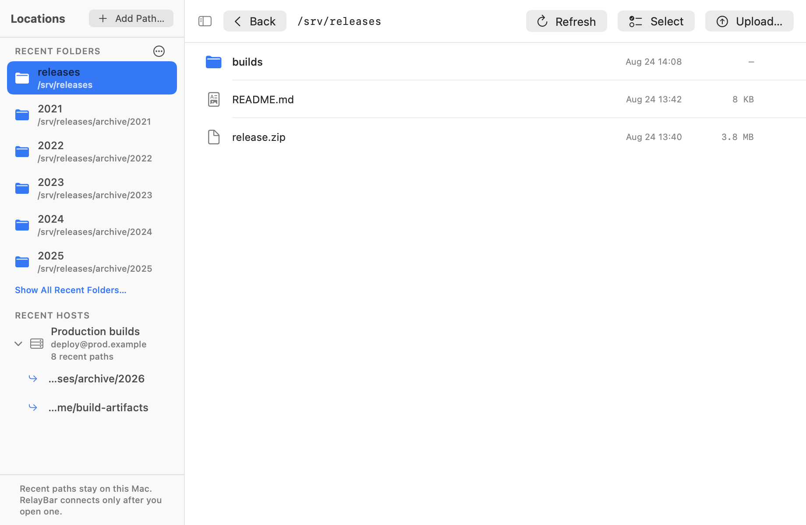

Reopen recent folders
Successful folders stay one click away—without scanning or indexing the server.
A tiny native macOS menu-bar app. Paste an SSH command, get a saved profile—local, SOCKS, remote, and Unix-socket rules over one managed connection.
Free · Apple notarized · macOS 13+ · No accounts · No analytics
brew install --cask lx2026/tap/relaybar
ssh -N -L 3000:127.0.0.1:3000 -D 1080 devbox.local

Your config, keys, known hosts, and agent stay untouched.
No Electron, no background service, no replacement SSH stack.
No account, analytics SDK, or cloud sync phones home.
Reopen a recent folder in one click, browse saved paths by host, or add an exact path. RelayBar connects only when you open a location.

Successful folders stay one click away—without scanning or indexing the server.
Expand a recent host to revisit its paths, or add another exact absolute path.
Stage one local file before publishing it. Preview and download stay in the same workspace.
RelayBar parses typed forwarding arguments without invoking a shell, turns them into a visible profile, and keeps the controls in your menu bar.
Import repeated or mixed -L, -D,
and -R rules.
Name the profile, check each typed endpoint, and optionally place it in a group.
Start, stop, retry, and open supported endpoints without keeping a Terminal tab around.

Choose how often SSH reconnects, undo a pending delete, and preview more files without leaving RelayBar.
Exponential backoff and a saved retry limit. Set it to zero to turn automatic reconnects off.
Single and bulk file deletion wait before reaching the server. Undo during the countdown to keep your files.
Read selectable JSON and play MP4 files with native controls. Uploads show byte and percentage progress.
Distinct paths, compact endpoints, and profile forms that explain exactly what needs fixing.
RelayBar manages visible typed forwarding rules over one SSH connection per profile. It doesn’t add an account, analytics SDK, background service, or replacement SSH stack.
It runs /usr/bin/ssh and /usr/bin/sftp
directly, so your existing config, keys, known hosts, and SSH agent
remain the source of truth.